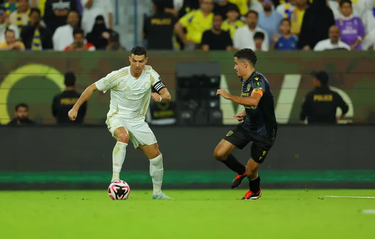

V.League
Ronaldo missed a penalty, Al Nassr was eliminated from the Saudi Arabia King's Cup
VTV.vn - Ronaldo missed a penalty kick at the last minute, Al Nassr was eliminated by Al Taawoun in the 1/8 round of the Saudi Arabia King's Cup 2024/2025 season.
39-year-old striker Cristiano Ronaldo missed his first penalty kick for Al Nassr, causing the team to lose 0-1 to Al Taawoun and be eliminated in the King Cup round of 16.
Goal scorer: Al Ahmed 71'
In the second half's injury time, striker Mohammed Maran was kicked in the leg in the Al Taawoun penalty area, giving Al Nassr a penalty when they were down 0-1. However, Ronaldo's penalty shot went over the bar and missed the chance to equalize. In the remaining time, Stefano Pioli's team failed to score, accepting an early elimination from the King's Cup.
After missing the penalty, Ronaldo covered his face in regret. Many Al Nassr spectators behind the goal also held their heads and bent down to avoid the ball. In all 19 previous penalties for Al Nassr, Ronaldo had put the ball in the net, but this time he didn't even hit the target.
The last time Ronaldo missed a penalty was in the round of 16 of Euro 2024, when his shot was deflected off the post by goalkeeper Jan Oblak, but Portugal still reached the quarter-finals after beating Slovenia on penalties. That match was memorable because Ronaldo burst into tears after missing a penalty, but he scored the first penalty of the shootout.
The last time Ronaldo missed a penalty was when he was still playing for Man Utd, against Middlesbrough in the fourth round of the FA Cup on February 4, 2022. At that time, the Portuguese superstar shot low to the left corner but missed the post. Ronaldo then scored in the first penalty shootout, but Man Utd were still eliminated after losing 7-8.
Ronaldo has taken 199 penalties in his career, scoring 168. His penalty conversion rate has dropped from 84.8% to 84.4%, but is still slightly above his average of around 78% to 80%. However, the 39-year-old superstar's efficiency this year is just 77.8%, down from 100% from 15 penalties in 2023.
In addition to the penalty kick, Ronaldo also had three shots but only once forced the goalkeeper to work. According to Fotmob statistics, he received 6.3 points, higher than only the two players who started this match, goalkeeper Bento Krepski and striker Anderson Talisca. After the match, Ronaldo wrote on social media: "Every challenge is an opportunity to develop."
The King's Cup has a knockout format similar to the National Cup in Vietnam, so this defeat caused Al Nassr to stop early. Al Taawoun is ranked 413th in the world, and fifth in Saudi Arabia, according to the Opta power index. Al Nassr is ranked 81st in the world, second in Saudi Arabia.
In the next match, Al Nassr will face the country's number one club, Al Hilal, in round 9 of the Saudi Pro League on the evening of November 1. Al Hilal is currently ranked 37th in the world, just four places behind Man Utd.